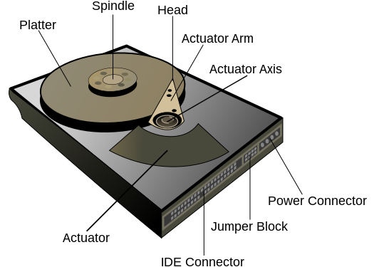
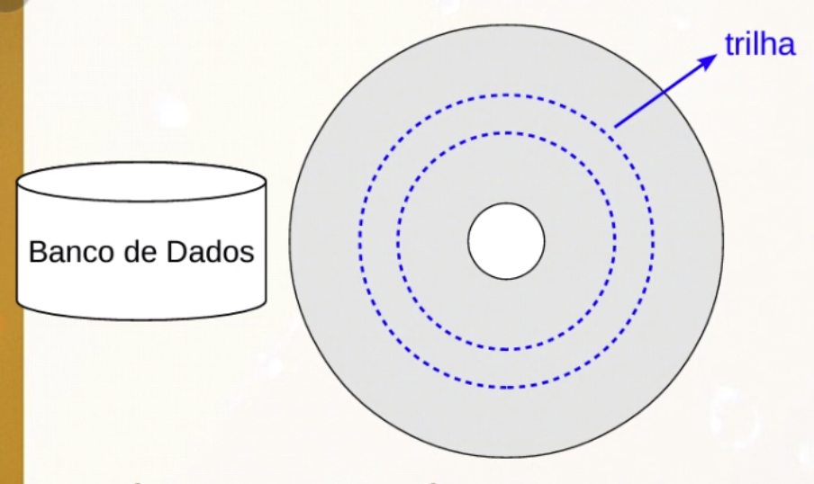

Disciplinas
-
BANCO DE DADOS-T01-2024-1 Concluído
Materiais
Vídeo 1 - Armazenamento Físico, Registros e Páginas - Aula 04/11 - Bancos de Dados 2020.2. sendProfessor ministrante: André Santanchè.
Conteúdo
Armazenamento em Bancos de Dados Relacionais.
Recomendações de Leitura
- (Silberschatz, 2006, cap. 11)
- (Ramakrishnan, 2003, cap. 8)
- (Elmasri, 2011, cap. 11 e 12)
Onde Armazenamos Dados?
- Memória RAM.
- Disco:
- HD.
- CD / DVD.
- Fita magnética.
- Solid State Drive (SSD):
- usa circuitos integrados como a memória sem partes mecânicas -.
- retém os dados sem a necessidade de energia.
- Interface equivalente a de um disco.
Questão 1.
Para cada item abaixo, liste suas vantagens e desvantagens como opção de tecnologia para armazenamento de dados num SGBD. Dê exemplos de dados que se adequariam à tecnologia.
- a) Memória RAM.
- Rápida/cara. Pequena quantidade de dados, índices, dados temporários etc.
- b) Disco Magnético.
- Relativamente barato/relativamente lento. Grande quantidade de dados, dados institucionais, logs, etc.
- c) Fita Magnética.
- Baixo custo/lenta. Dados de backup, dados históricos, logs, etc.
Hierarquia de Armazenamento.
- Armazenamento Primário:
- Operado diretamente pela CPU.
- Exemplos:
- memória RAM, cache.
- Armazenamento Secundário:
- Usualmente mais barato e mais lento.
- Não operado diretamente pela CPU.
- Exigem intermediação de armazenamento primário.
- Exemplos:
- disco, fita magnética.
- Referência: (Elmasri, 2011).
Estrutura do Disco.
fonte: https://en.wikipedia.org/w/index.php?title=File:Hard_drive-en.svg
Trilha: - Círculos magnéticos sobre a superfície.
- Local onde são armazenados os dados.

- Unidades de divisão da trilha.
- Menor unidade de leitura/gravação.
Página.
- Organização feita pelo SO em memória sobre o disco.
- Unidade de trabalho para o SO.
Bloco Físico X Página.
- Blocos Físicos são mapeados para Páginas.
- tamanhos podem ser diferentes.
Armazenamento Secundário intermediado pelo Primário.
Cenário Simplificado:Operação de Leitura.
- ler(X).
- encontra bloco X no disco.
- copia bloco para buffer da memória principal (se ainda não estiver lá).
- copia o item X do buffer para a variável X da memória principal.
- (Elmasri, 2010).
Operação de Gravação.
- gravar(X).
- encontra bloco X no disco.
- copia bloco para buffer da memória principal (se ainda não estiver lá).
- copia variável X da memória principal para o buffer.
- atualiza o buffer no disco.
- (Elmasri, 2010).
Linguagem de consulta - SQL Parte l.
Estes slides estão baseados na bibliografia: